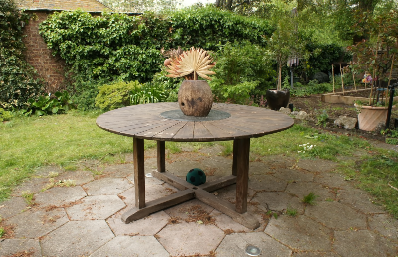
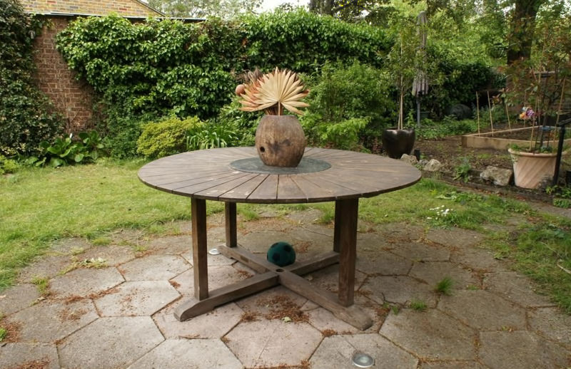
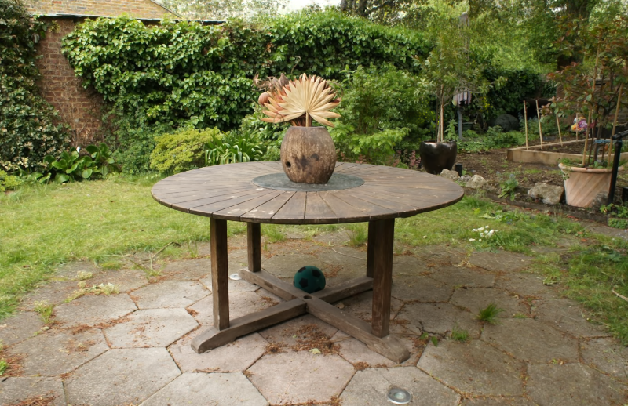
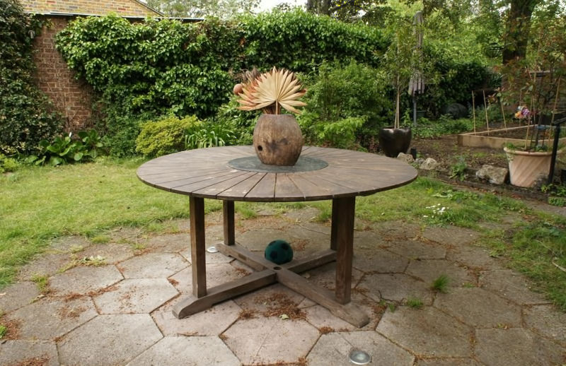

The rise of Extended Reality (XR) requires efficient streaming of 3D online worlds, challenging current 3DGS representations to adapt to bandwidth-constrained environments.
We propose LapisGS, a layered 3DGS that supports adaptive streaming and progressive rendering. Our method constructs a layered structure for cumulative representation, incorporates dynamic opacity optimization to maintain visual fidelity, and utilizes occupancy maps to efficiently manage Gaussian splats. This proposed model offers a progressive representation supporting a continuous rendering quality adapted for bandwidth-aware streaming.
Extensive experiments validate the effectiveness of our approach in balancing visual fidelity with the compactness of the model, with up to 50.71% improvement in SSIM, 286.53% improvement in LPIPS, and 318.41% reduction in model size, and shows its potential for bandwidth-adapted 3D streaming and rendering applications.
Existing methods are primarily designed for reconstruction quality and rendering speed, without considering the challenges of adaptive streaming. These space-based 3DGS hierarchies (Upper at the Figure) feature discrete quality layers, each independently represented by a set of anchor splats. This approach requires substantial computational resources for maintenance and navigation, especially with frequent level transitions, and limits view-adaptive rendering.
To stream 3DGS over diverse and dynamic networks and heterogeneous devices, a layered progressive representation (Lower at the Figure) is needed. This representation must meet specific requirements: (i) The subsets of Gaussian splats in the model are able to represent complete 3D content with reduced details; (ii) The progressive LOD inherently shares visual information with lower levels to minimize redundancy in streaming and support view-adaptive rendering.
At the core of LapisGS is a layered structure for cumulative representation, where each layer adds additional details to the existing base layers, progressively refining the representation.
To force coherence among layers while avoiding re-encoding lower layers, we incorporate dynamic opacity optimization during training, allowing for selective adjustment of layer contributions for optimal visual fidelity.
We then utilize an occupancy map to track and exclude less important Gaussian splats during streaming and rendering.

The downsampled model shows significant degradation in visual quality as model size decreases. This suggests that traditional downsampling methods for point clouds are inadequate for 3DGS, primarily because they fail to re-optimize or re-learn the model for the reduced set of splats. Given the unique distribution and anisotropic nature of Gaussian splats, simply reducing the number of splats without retraining does not capture the high-frequency details or maintain the model's original fidelity.
LapisGS achieves notable improvements in both visual quality and model size compared to the single-scale method. These results emphasize the necessity of constructing a multiscale 3DGS LOD model and highlight the effectiveness and efficiency of our method in maintaining visual fidelity while reducing data overhead.
LapisGS rivals the multiscale model, which serves as the upper bound for reconstruction quality, achieving comparable visual fidelity with up to a 2.33X smaller model size. This demonstrates that our method effectively balances high and low resolutions, creating a compact yet highly detailed representation.
We provide sample renderings of different methods for better comparison.
 



@article{Shi2024LapisGS,
author = {Shi, Yuang and Gasparini, Simone and Morin, Géraldine and Ooi, Wei Tsang},
title = {LapisGS: Layered Progressive 3D Gaussian Splatting for Adaptive Streaming},
journal = {arXiv preprint arXiv:2408.14823},
year = {2024},
} LapisGS:
LapisGS: